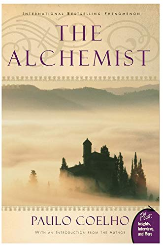
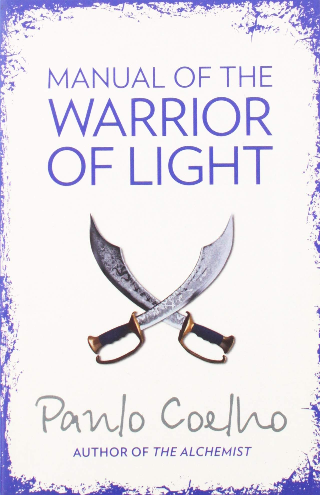
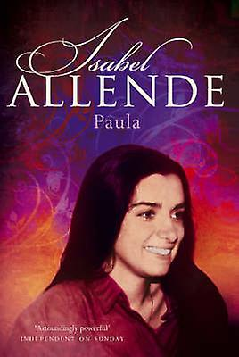
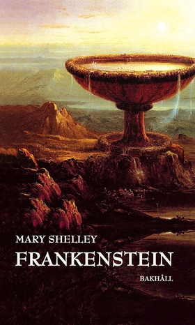
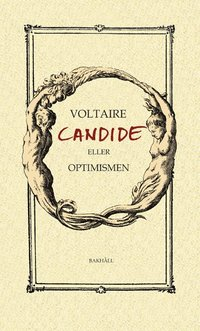
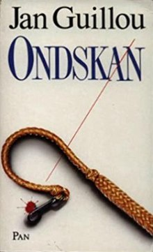
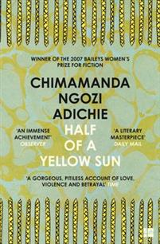
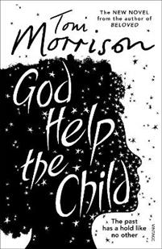

About
Hi there, may name is Maria Teresa and I come from Nicaragua
I moved to Swedeen five years ago and I live in Helsingborg with my sambo and my son. As a person I am shy and privat but at the same time friendly. I love details and hard working. If I should choose a frase to describe myself that would be "I don`t give up"!.
I moved to Swedeen five years ago and I live in Helsingborg with my sambo and my son. As a person I am shy and privat but at the same time friendly. I love details and hard working. If I should choose a frase to describe myself that would be "I don`t give up"!.
Interes
Within my interes are learning languages and I particulary consider it as one of the best
barrier breaker between people.Traveling and be able to experience new cultures and
environments is also another great interes for me. Nevertheles reading a good book that
allow me to fly inmagination and keep my curiosity and focus on the top.
Joobies
One of the thing I most enjoy in life is dancing because is great way to express happines
or even get rid of bad feeling. I also enjoy a lot been in contact with nature,
can be exploring the sounds of the forest or taking walks over the beach. However the
biggest joy of my life is spending time with my beautiful lite family.
Here some of my favorites Books
s
The Alchemist" is a global phenomenon... selling
over 30 million copies worldwide.This exciting new edition includes exclusive content,
such as a new forward to the book by the author, an interview with Paulo Coelho, and much
more, providing an in-depth look at this much-loved title.

Warrior of the Light: A Manual is an inspirational...
companion to The Alchemist.An international bestseller that has beguiled
millions of readers around the world. Every short passage invites us to live out our
dreams,to embrace the uncertainty of life, and to rise to our own unique destiny.

In December 1991, Allende's daughter Paula,...
aged 26,fell gravely ill and sank into a coma.This book started asa letter to Paula
written during the hours spent at her bedside, and became a personal memoir and a
testament to the ties that bind families - a brave, enlightening, inspiring true
story.

For centuries, the story of Victor Frankenstein...
and the monster he created has held readers spellbound.On the surface, it is a novel
of tense and steadily mounting dread. On a more profound level, it illuminates the triumph
and tragedy of the humancondition in its portrayal of a scientist who oversteps the bounds
of conscience, and of a creature tortured by the solitude of a world in which he does not
belong.

Social satire about a young man who believes,...
despite much evidence to the contrary. that "all is for the best in the best of all possible
worlds".All is for the best in the best of all possible worlds It was the indifferent shrug
and callous inertia that this optimism concealed which so angered Voltaire, who found this
approach a patently inadequate response to suffering, to natural disasters, illness and
man-made war.

The novel and performance Ondksan deals with the topics...
of bullying and exclusion.both at school and at home. The purpose is to provide a more
reality-basedpicture of how bullying can look and what to do about it, even as a fellow
human. This is a topic that is constantly relevant.

A masterly, haunting new novel from a writer heralded by...
The Washington Post Book World as “the 21st-century daughter of Chinua Achebe,”
Half of a Yellow Sun re-creates a seminal moment in modern African history: Biafra’s
impassioned struggle to establish an independent republic in Nigeria in the 1960s, and the
chilling violence that followed.

Toni Morrison's fierce and provocative novel exposes...
the damage adults wreak on children, and how this echoes through the generations.
Sweetness wants to love her child, Bride, but she struggles to love her as a mother
should.